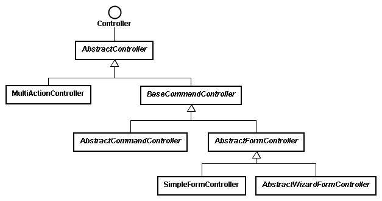

当 使用者送出请求之后，实际上处理请求的是 Controller，您可以实作 Controller 介面来完 成请求处理的逻辑，在 Spring 中， Controller 是受 Spring IoC 容器管理的一个 Bean 实例， 另一方面，Spring 提供了一个丰富的 Controller 继承架构，让您可以根据实际上的需求来继承 某个类别，以完成所需的 Controller 处理。
以下列出 Spring 中 Controller 的继承架构：

以下分别简介 Controller 相关类别之作用：
• AbstractController
AbstractController 实作了 Controller 介面，并继承了 WebContentGenerator，提供了 Session 快取与同步化（synchronized）的处理，您可以直接继承 AbstractController，并重新定义它 的 handleRequestInternal()方法来实作请求的处理，例如：
public class SomeController extends AbstractController {
public ModelAndView handleRequestInternal( HttpServletRequest request,
HttpServletResponse response)
throws Exception {
....
return new ModelAndView("view", "modelName", model);
}
..
}
• MultiActionController
如果为每一个请求撰写一个 Controller 类别，在程 式规模增大时，您的 Controller 类别将会 迅速增加，可以继承或直接使用 MultiActionController 类别，将数个相关的请求处理集 中于 同一个物件中加以管理，而不用每一个请求撰写一个控制物件。
• BaseCommandController、AbstractCommandController
如果您需要将使用者的请求中所提供的参数值撷取至一个 Command 物件中加以管理，则可以使 用 BaseCommandController 类别的子类别，在 Spring 中，Command 是一个纯綷的 JavaBean（Plain Ordinary Java Object, POJO）， BaseCommandController 负责将请求参数撷取出来并设定至 Command 物件中，AbstractCommandController 则定义了后续的一些处理流程，通常您会继承 AbstractCommandController 来定义一个 CommandController，一个例子如下：
public class SomeCommandController extends AbstractCommandController {
public SomeCommandController() {
setCommandClass(YourCommand.class);
}
public ModelAndView handle(HttpServletRequest request,
HttpServletResponse response,
Object command,
BindException exception)
throws Exception {
YourCommand your = (YourCommand) command;
...
return new ModelAndView(..);
}
..
}
• AbstractFormController
对于表单处理，AbstractFormController 中定义了一系列处理请求中参数，及表单提交成功或 失败时所要进行的页面流程。
• SimpleFormController
对于简单的表单处理，您可以继承的是 SimpleFormController 类别，您可以重新定义它的 doSubmitAction()方法，如果要自己处理 ModelAndView，则可以重新定义它的 onSubmit()方法。
• AbstractWizardFormController
对于需要由数个表单画面来完成一系列资料收集的网页来说，可以继承 AbstractWizardFormController，您可以像桌面应用程式上使用精灵（Wizard）功能的方式来制 作表单。